_files/dapmh1.png)
Preface:
This guide is designed for beginners looking to create their first few HANDJOB encodes for the group using a Mac computer system. When you’ve finished your encode please drop by the HANDJOB thread to get it approved for uploading. If you upload your encode using the HANDJOB name before getting it approved, your torrent will very likely be deleted by PtP.
This guide covers DVD rips only, for encoding from HD sources, see Wiki > The HANDJOB Guide to BluRay Encodes for Mac (Beginner Friendly).
Act 1: software and settings
Here's what you're gonna need:
- RipIt (password is 'handjob') – What, Why, Where?: Show• This app requires an application firewall program such as Little Snitch to enable successful registration
_files/c3qzae.png) Sourced from Brokenstones and zipped/encrypted to allow storage.RipIt is an application that enables you to create an exact backup of the DVD to your hard drive while defeating all security measures and region coding present on the DVD. This is advantageous because (1) spinning an optical drive for the many hours required to encode can wear it out quicker, and (2) SubRip will often struggle to read DVDs with security measure still intact.Only ever use the 'Rip' function, never 'Compress'.
Sourced from Brokenstones and zipped/encrypted to allow storage.RipIt is an application that enables you to create an exact backup of the DVD to your hard drive while defeating all security measures and region coding present on the DVD. This is advantageous because (1) spinning an optical drive for the many hours required to encode can wear it out quicker, and (2) SubRip will often struggle to read DVDs with security measure still intact.Only ever use the 'Rip' function, never 'Compress'. - Handbrake
- Mediainfo (get the one in white marked ‘free of charge GUI’)
- VLC 3.0.2+ – What's this?: Show
VLC is an open-source program able to play practically any media you throw at it. It is also capable of taking accurate screenshots of our encodes, which we'll need for the approval process (both at HANDJOB and with PTP).
Make sure not to use any version below 3.0.2 since previous iterations had issues taking accurately sized screenshots for certain types of media. - Winebottler – What's this?: Show
This is an application which will allow you to easily install small Windows apps on a Mac computer. We will be using it with SubRip (below). Download the latest stable version and install.
- SubRip - What's this?: Show
Although a Windows application, we will be using this with Winebottler (above) to enable us to create subtitles for our encodes. Other applications are available, but for the purposes of this guide, we'll go with SubRip. Download the latest version and unzip the file.
- MKVToolNix – What, why?: Show
MKV files are what's known as a container file. That means there are lots of other inner files (like video, audio, chapters and subtitles) contained within them. This program allows you to add, remove, rename or edit any of those inner files without having to re-encode anything. This will be needed for when you come to deal with subtitles.
Setting up SubRip: Show
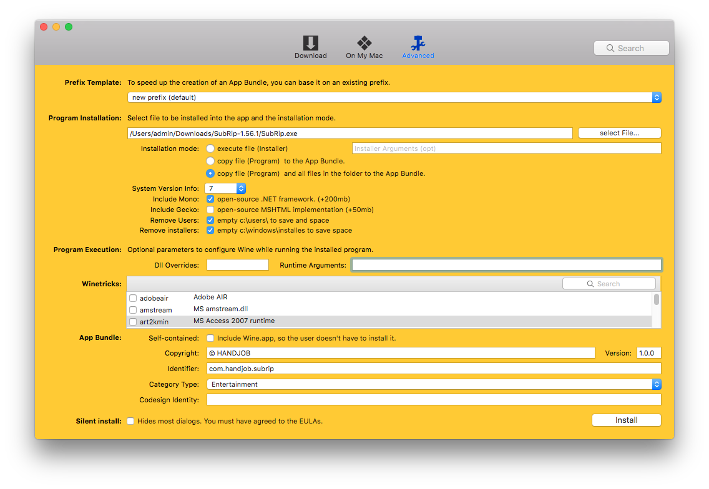You should have already installed Winebottler, so launch it and navigate to the 'Advanced' tab. Use the image above to install SubRip. Remember to target the .exe file with the 'Browse' prompt and to use the 'Copy all files in the same folder' option as illustrated. Hit install, choose an install location and it should be ready to use. Note that when launching the application, it might quit before relaunching. This is nothing to worry about.
Ripping the DVD: Show
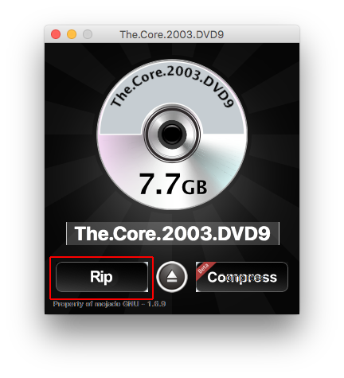We're using RipIt here. Simply wait for the disc to load and select 'Rip'. Under no circumstances should you ever choose 'Compress'. Then choose somewhere to save the ripped files (these are called VOB/IFO files).
Setting up Handbrake:
- Take off the training wheels: Show
Install Handbrake and then load it up. After choosing your source (sidenote: this must be an untouched DVD either on disc or on your hard drive. You should never encode from an already encoded file (aka transcoding)). On the top menu select 'Handbrake > Preferences'. You should then see this window:
Make your preferences look the same as the above illustration._files/u72yv3.png)
- Tab 1: Summary: Show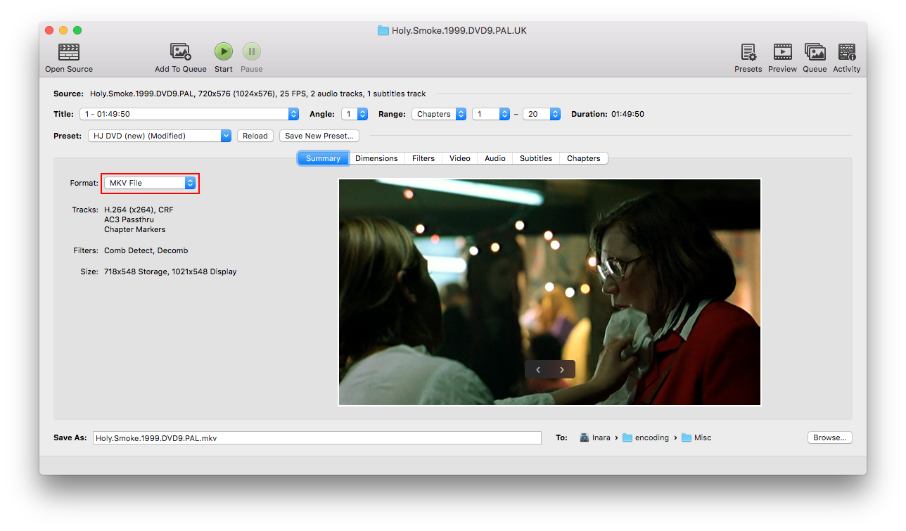For the time being, ignore everything else besides the format option. This should be set to MKV File, as above.
- Tab 2: Dimensions: Show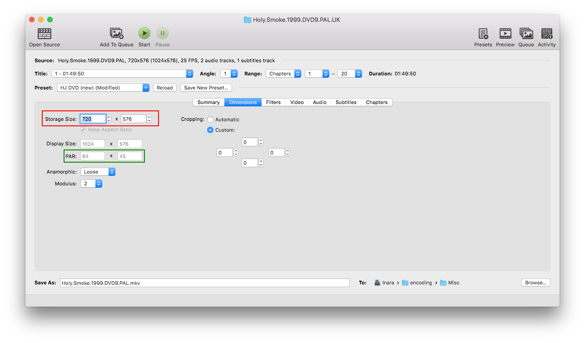The dimensions tab is where we set up the cropping for our encode. It's also where anamorphic display is set up. The latter is vital for DVD encodes and, thanks to Handbrake's implementation, capable of going very wrong if you don't pay careful attention. If you want to save a Preset (recommended), you may find it useful to leave this tab until last, since settings will vary with each new encode.Firstly, ensure that your 'Storage Size' is either 720 x 576 (PAL DVD sources) or 720 x 480 (NTSC DVD sources) with zero crop applied. Next, select:• Anamorphic: Loose• Modulus: 2as shown above. Make a mental note of the PAR (64/45 in our example above, shown in the green box).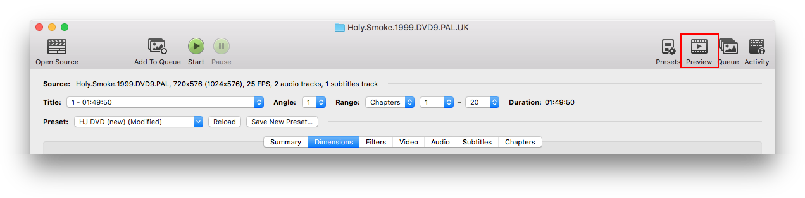If you click the 'Preview' icon, you'll then be presented with another window showing some still frames from your encode with the selected cropping settings applied.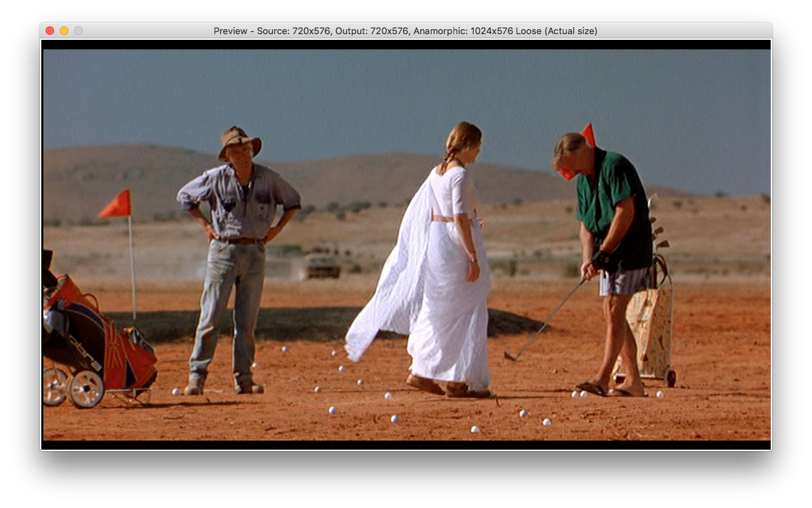In our case, we've got thick black pixels on the top and bottom of the frame, a black pixel line down the left-hand side of the frame, and, if you look carefully, you'll see a light crimping line down the right-hand side of the frame too. You may need to cycle through many different screenshots before you find ones which illustrate your cropping well. We now need to return to our Dimensions tab and crop just enough to make our black pixel lines and crimping line go away.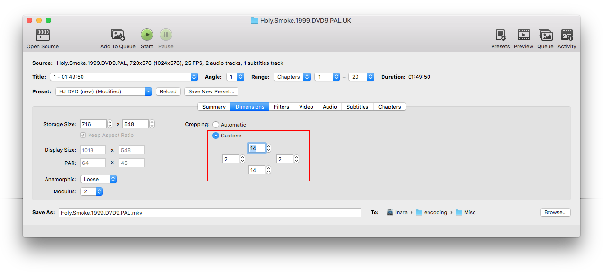You might choose to use Automatic cropping mode here, but bear in mind that this feature is not perfect. It will often either undercrop or overcrop. You should always visually inspect the cropping and switch to Custom to make adjustments if necessary. We've chosen our cropping settings now and the Preview window shows our updated settings: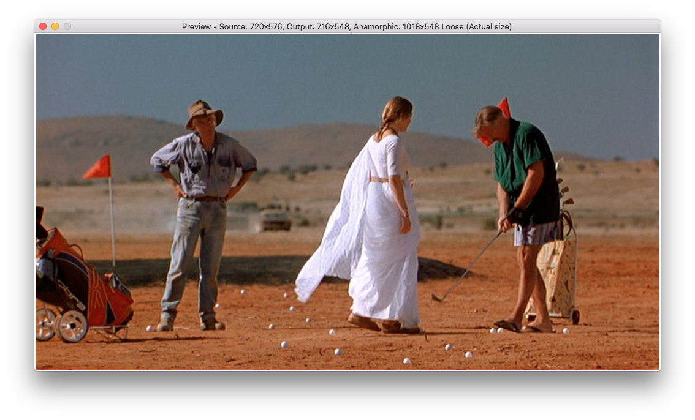Remember when we said that Handbrake has some "complexities" with its handling of anamorphic calculations? We need to check our settings now to make sure everything is correct. When setting up your cropping, the software can sometimes resize the source size, or even change the aspect ratio. You need to verify:(1) That the PAR is the same as when you started (green box)(2) That your storage size is equal to your source resolution, minus the crop settings (orange and blue boxes)In our example, we started with 720 x 576. We removed 28px from the height (orange) and 4px from the width (blue). This should leave 716 x 548, which is correct. Our PAR has also stayed constant at 64/45. Therefore, we're good to continue. You'll need to set up your cropping like this for each and every encode.If your PAR has changed, or your measurements don't add up, or you just want to be sure, then you can enter 720 into the storage size for width and press 'Enter'. This should reset everything to the proper dimensions with your cropping taken into account.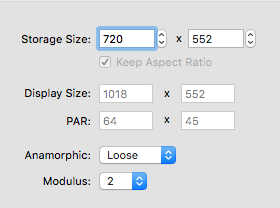
- Tab 3: Filters: Show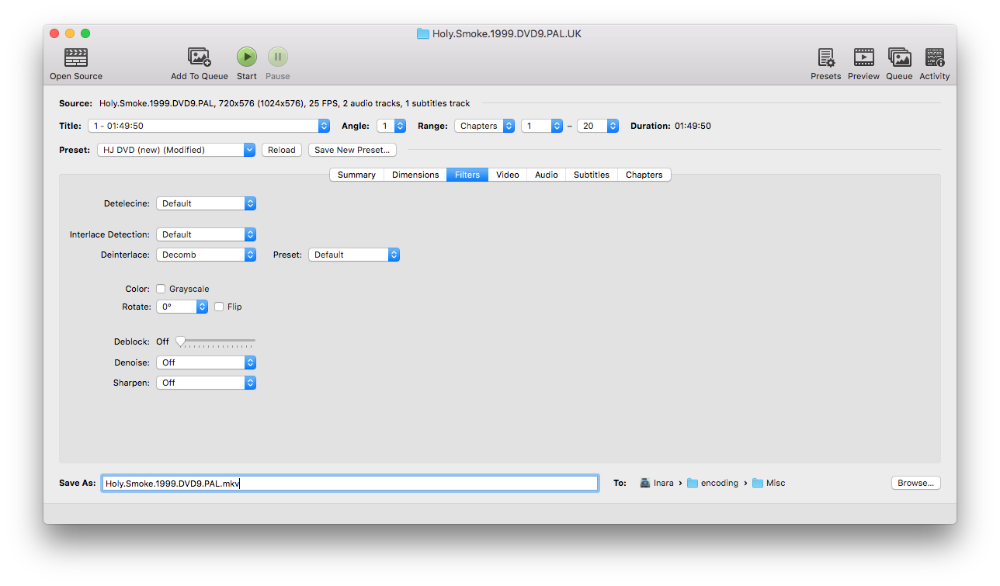The recommended settings for this tab are:• Detelecine: Default• Interlace Detection: Default• Deinterlace: Decomb > Preset: Default• Color: Greyscale unchecked• Rotate: 0º > Flip unchecked• Deblock: Off• Denoise: Off• Sharpen: Off
- Tab 4: Video: Show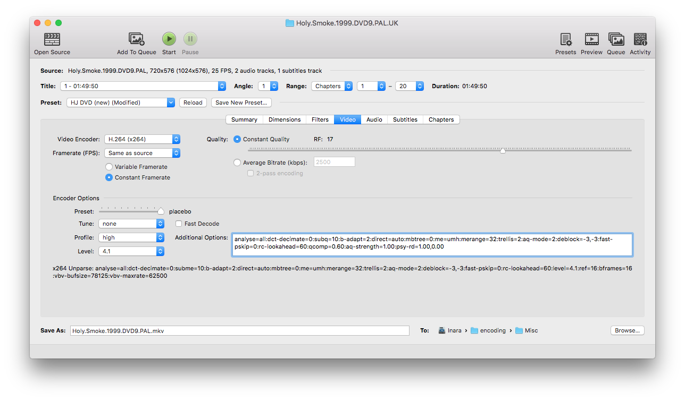In the video tab, there are a lot of important settings, so it's especially vital that you ensure that your settings are identical to the ones pictured above (for now). They are:• Video Encoder: H.264 (x264)• Framerate: Same as source [Constant]• Constant Quality RF (CRF): 17• Preset: Placebo• Tune: none• Fast Decode: unchecked• Profile: High• Level: 4.1Additional options:
subme=10:deblock=-3,-3:me=umh:merange=32:mbtree=0:dct-decimate=0:fast-pskip=0:aq-mode=2:aq-strength=1.0:qcomp=0.60:psy-rd=1.0,0.00CRF (Constant Rate Factor) is the most important setting in Handbrake when it comes to deciding the video bitrate of your encode. Either 19, 18 or 17 is a good default setting for this, although you will likely have to alter this when we come to the testing phase of our encoding. Remember that the lower the number (e.g. CRF 16), the less compression is applied which will result in better quality and larger encode size; a higher number (e.g. CRF 20) means more compression is applied which gives you lower quality but a smaller encode size. - Tab 5: Audio: Show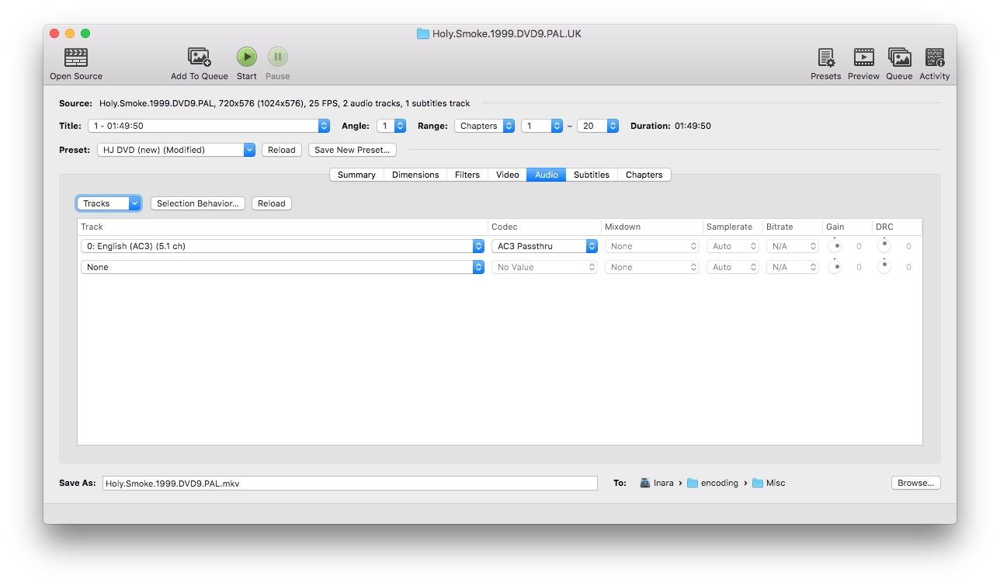In most cases, DVDs will contain main audio in either AC3 or DTS format. These are compressed (or lossy) formats and not suitable for more compression during the encoding process. Therefore, we use passthru to copy the audio from the source to the encode without altering it. Main audio refers to the original language audio, and, if applicable, an English-language dub of a non-English feature (thus making it a 'Dual Audio' encode). Dubs in any other languages should not be included in your encode.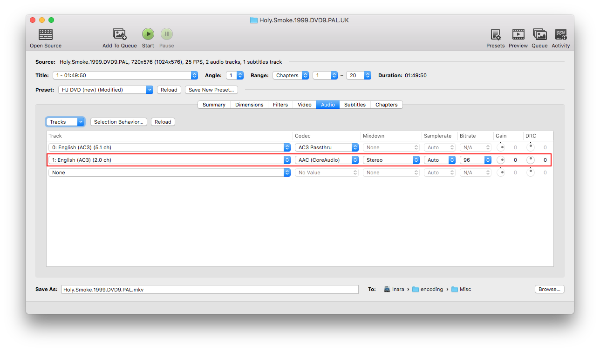In the red box above, an audio commentary track is highlighted. This is classed as 'secondary audio'. As such, it's okay to compress the audio track further during the encode process. Audio commentaries will ordinarily be stereo, and should be encoded with AAC to 96 kbps or lower.Musicals and ConcertsWhen your DVD feature is either a musical or concert, it may contain a lossless main audio track in the form of PCM or LPCM. This format is not optimised for efficiency, but you can keep the lossless audio by converting it to 16-bit FLAC. We've done this in the example below: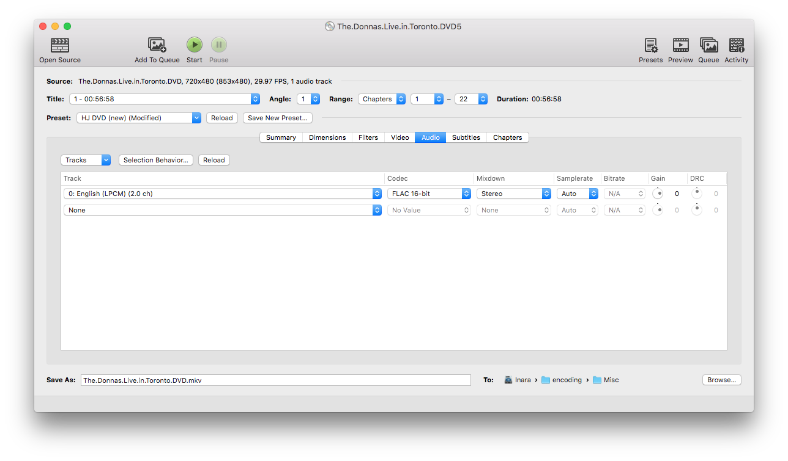There may be times when you have both an AC3 surround track and a stereo lossless track on the same DVD. The choice here may come down to personal preference. If in doubt, ask in the HANDJOB thread.
- Tab 6: Subtitles: Show
When it comes to subtitles, you have two choices: you can either OCR (Optical Character Recognition) them into text files, or you can use Handbrake to include them as image overlays. It's generally recommended that you try to OCR the English subtitles, especially in the case of non-English language films. If you're going to OCR a subtitle track, then you don't need to select it in Handbrake. You should generally only attempt to OCR languages you speak, or with whose alphabets you are familiar.
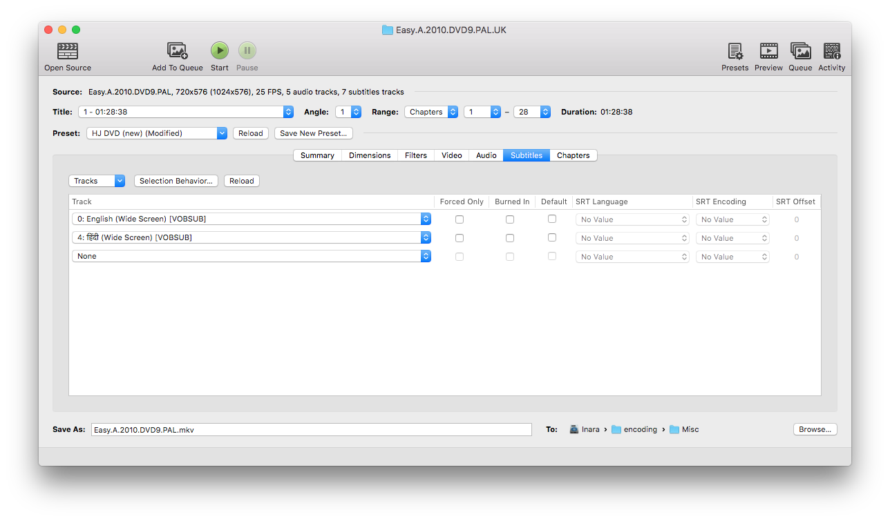Above, we've chosen to include the image-based subtitles for two languages in our encode. Note that we've left all the boxes unchecked. It's usually easier to set up defaults in MKVToolNix post-encode, so we won't worry about those for now. - Tab 7: Chapters: Show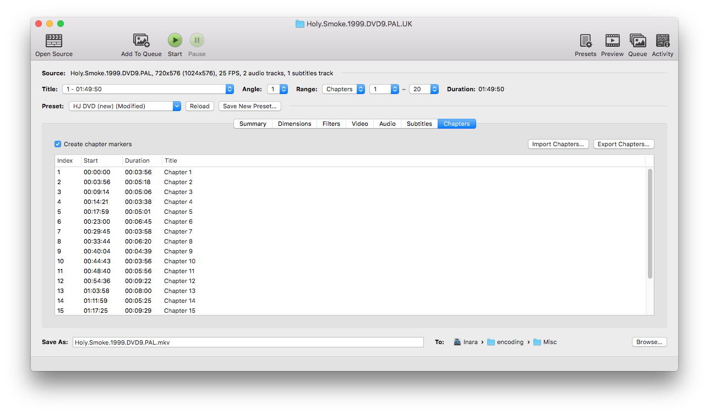Does your DVD have chapter names? Check either at Chapter DB, bn.com or the old-fashioned way, by loading up your DVD and checking the scene selection from the menu. If the chapters have names, we encourage you to enter them here.
- Saving your Preset: Show
At this point, it is probably best to save all of your default settings as a Handbrake preset. Click the button highlighted below:Next click the + button as shown:
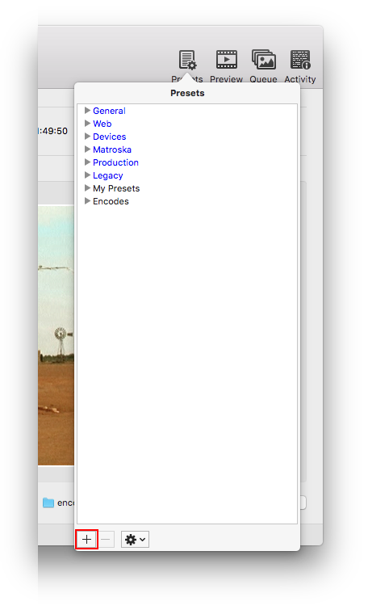Then finally, enter a name for your new preset and, optionally, a description for it.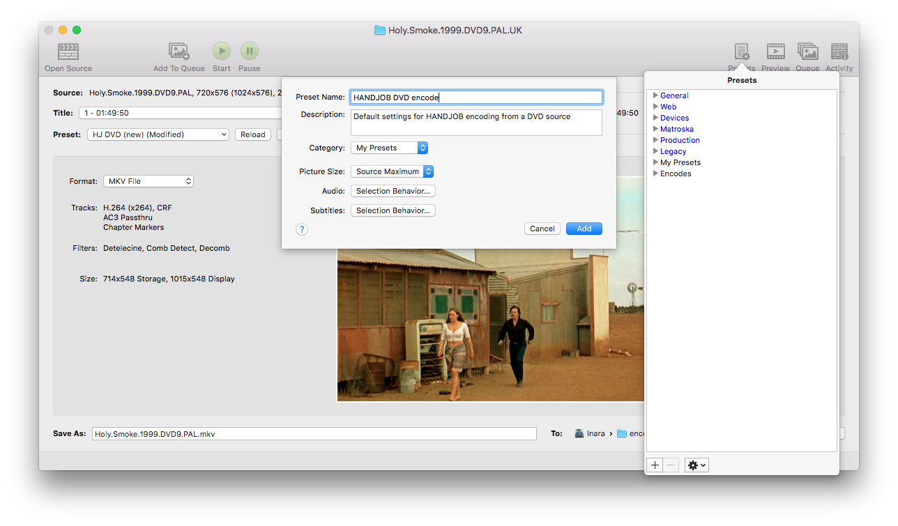You will likely have to make some adjustments to the above settings each time you load up a new source. You'll almost certainly need to go through the Cropping setup (Tab 2: Dimensions) as well as the Audio for each and every encode.
Act 2: testing and encoding
- Test encode: Show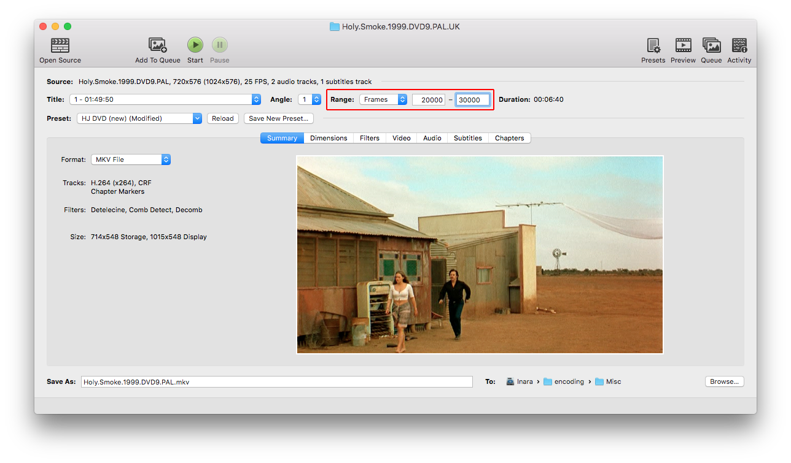Now we're going to encode a short section of the film. Although you can select a larger number if you wish, 10,000 frames usually gives us enough data to work with (see above). We're starting 20,000 frames in because this ensures that we aren't encoding the opening credits. Once you've chosen your frame range, select 'Start' and the test encode will begin.
- Reference & B-Frames: ShowNote: This section is optional and is only recommended if you have a slower CPU or other time constraints which necessitate greater encoding efficiency. File size is not affected. If you do not set ref and b-frames manually, Handbrake will default to 16 for each, which is okay for all DVD encodes.Once your test encode has completed, hit the 'Activity' icon in Handbrake.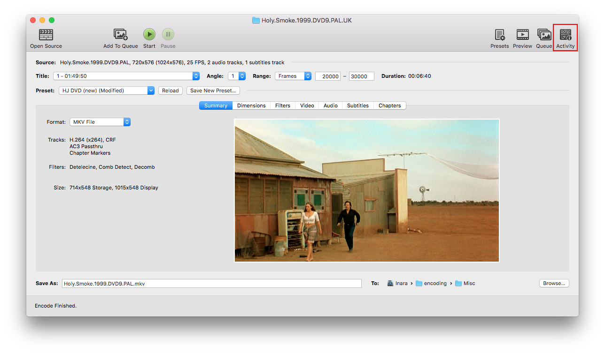In the window that next appears, scroll down to the very bottom of the text output and look for the two lines of data highlighted ('consecutive B-frames' and 'ref P L0'). What we do here is count from left to right, starting with '0' for b-frames and '1' for ref and find the last position to have a value of over 1%. The number of that position becomes our new value for each. So in the example below, we will be using '7' for maximum b-frames and '15' for reference frames.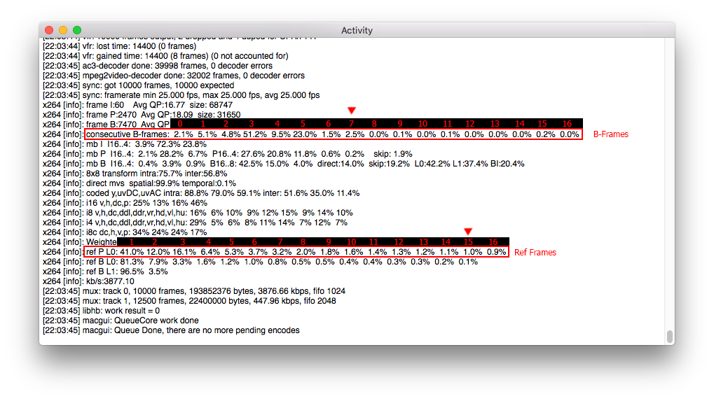Now you need to navigate back to the 'Video' tab in Handbrake and enter these values into your 'Additional Options' string, like so:Remember to separate new settings with a colon ( : ) and to use
ref=16andbframes=16(where 16 is your value from the above count) as the format for each setting. If you choose to manually set these values, you'll need to go through the same process with each new source you encode.Note: Even if your data tells you otherwise, you should never use a 'Reference Frames' value lower than '9', nor a 'Maximum B-Frames' value lower than '5' for a DVD encode. - Checking your bitrate: Show
Once your test encode is complete, we need to see what its video bitrate is. This is the average measurement for how much data is required to render your video each second. For a DVD encode, we ideally want a video bitrate which falls somewhere between 1,500 Kbps and 2,500 Kbps. To find out the bitrate of our test encode, first load up Mediainfo, then open (or drag and drop) your test encode file. This will tell us what we need to know, as illustrated below:
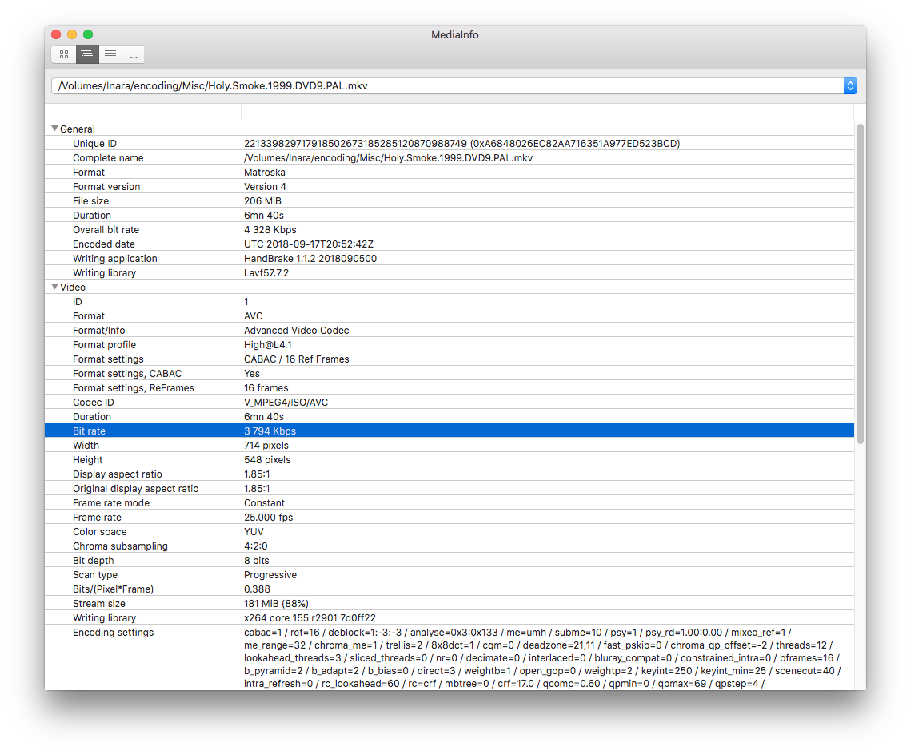As you can see above, this test came in at 3,794 Kbps, which is well above our desired range. In this case, it would be wise to run another test encode with a higher CRF. This one was CRF 17, so we might try 19 next. If you're not sure about your bitrate or what CRF settings to try, the Handjob team will be able to give you more advice. If, however, your bitrate was below 1,500 Kbps, you might run another test with CRF 16 or lower. Repeat until you have a test comfortably within the target range.Note: Bitrate can vary drastically between different parts of a film. Just because you get an acceptable bitrate in your test encode doesn't guarantee that your encode of the entire film will have a bitrate with a similar figure. To be extra sure, try another test encode or two, selecting a different range of frames for each one (perhaps 'Frames 60,000 - 75,000' and/or 'Frames 100,000 - 120,000'. - Using the correct frame-rate: Show
If you remember, on Handbrake under the 'Video' tab, there was a section with a couple of options under 'Framerate (FPS)'. This is the number of still images which are played during a second of video so as to create the impression of movement. Unfortunately, there is a great deal of variation between formats and also between regions when it comes to video framerate. To make things easier, forget that button for 'Variable Framerate' exists on Handbrake. We will never be using it. The dropdown box which we selected 'Same as Source' from is one we might need to use on rare occasions.
NTSC format, the one used in North American territories (amongst others) can sometimes give us 'duplicate frames'. So if you're encoding a PAL DVD – which runs at 25fps – (Europe et al.), this does not apply. Load your test encode up in Mediainfo again, and see what your framerate is...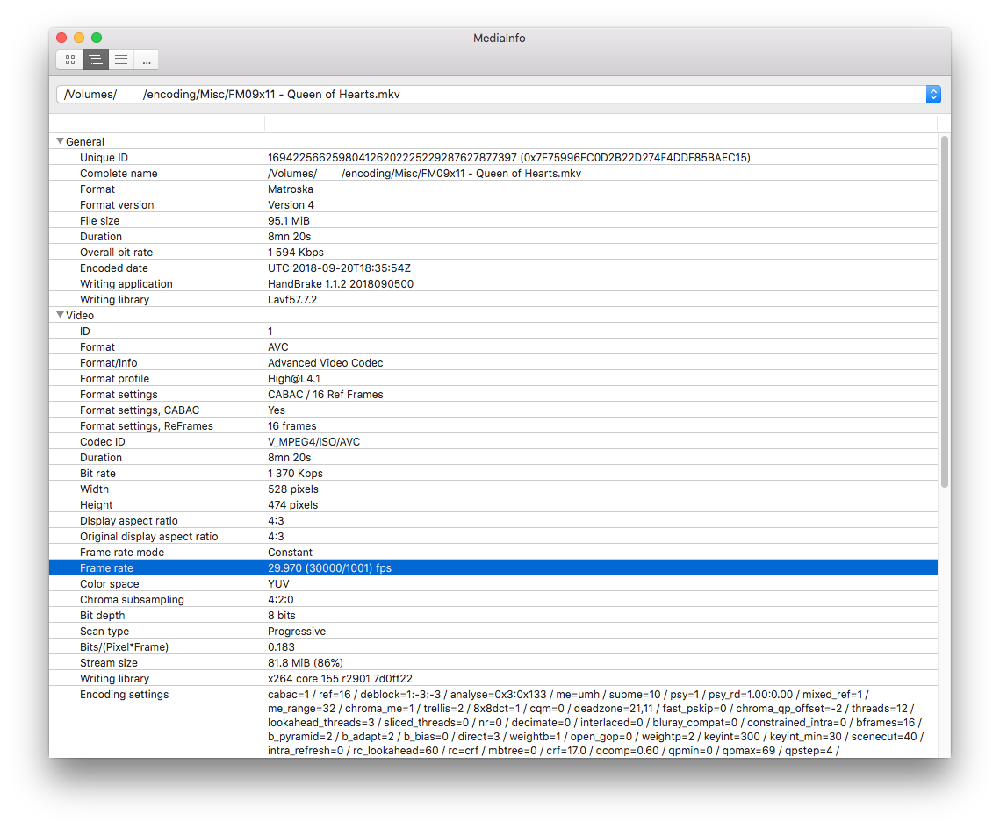If it says your framerate is like above (29.970fps) then we need to test for duplicate frames. If it says your framerate is something else, run this test anyway, just in case something else is wrong. So load your test encode (not the source) into VLC, find a scene with visible motion in, and pause the film. Then, we can use the 'e' key to move forward one frame at a time. We need to make sure that every time we press 'e', we get a new frame (something moves or changes). Check at least 20-30 consecutive frames to be sure there are no duplicates. On occasion though, you might get the pattern below (Click 'show comparison' and move your mouse from left to right to simulate a frame-by-frame advance)...Frame 1, Frame 2, Frame 3, Frame 4, Frame 5, Frame 6, Frame 7: Show comparison... If – and only if – you get the same pattern as above (a duplicate frame on every fifth frame), then we need to change something for this source. So move back to Handbrake and select the 'Video' tab. Then you need to change the FPS from 'Same as Source' to '23.976' as shown below. 'Constant Framerate' should always be used.After you've changed that, or if you had no duplicate frames, carry on to the next step. If you get duplicate frames in a different pattern than the one outlined above, seek advice before going any further._files/621ed1.png)
- Running your encode: Show
Once you have an appropriate CRF value from testing, go back to Handbrake and select it. Double check all your settings, making sure to include audio commentaries (AAC 96 Kbps or below), any English language dubs (non-English films only) and ensure that you haven't included any non-English dubs. You'll also want to check that you've included any subtitle tracks that you're not going to OCR. When that's done, change your 'frames' selection back to 'chapters'. Make sure the range runs from 'Chapter 1' to the very last chapter, then hit start. Then, depending on your computer's speed, it's either time for a few coffees, or time to go to bed.
Act 3: subtitles and muxing
- SRT subtitles... why?: ShowAs you may have noticed, Handbrake was perfectly capable of putting subtitles in your encode, so why this extra step? The subtitles on the DVD are in a format called VOBSUB. Subtitles in this format are not stored as a text file, but as a series of images which are overlaid on the video.Converting them to SRT (text) format through a process called OCR-ing (Optical Character Recognition) offers us two main advantages: (1) The subtitles take up much less space, giving you a more efficient encode, and (2) As images, neither the placement, the size, the font or the colour of the subtitles is changeable. They will also likely appear blocky. Alligator created a handy visual comparison:VOBSUB subtitles (images)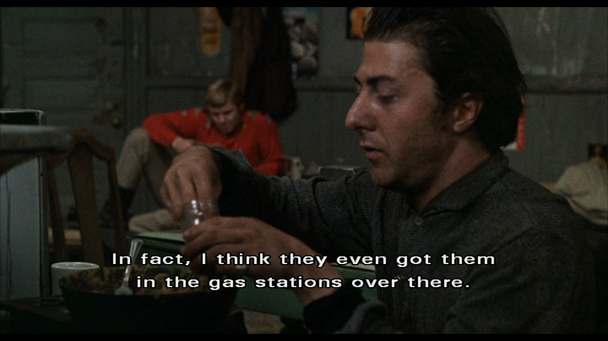SRT subtitles (text)
_files/xxAvk.png)
- Optical Character Recognition: Show
Now it's time for the harder part. Load up the SubRip app and follow the 3 clicks below:
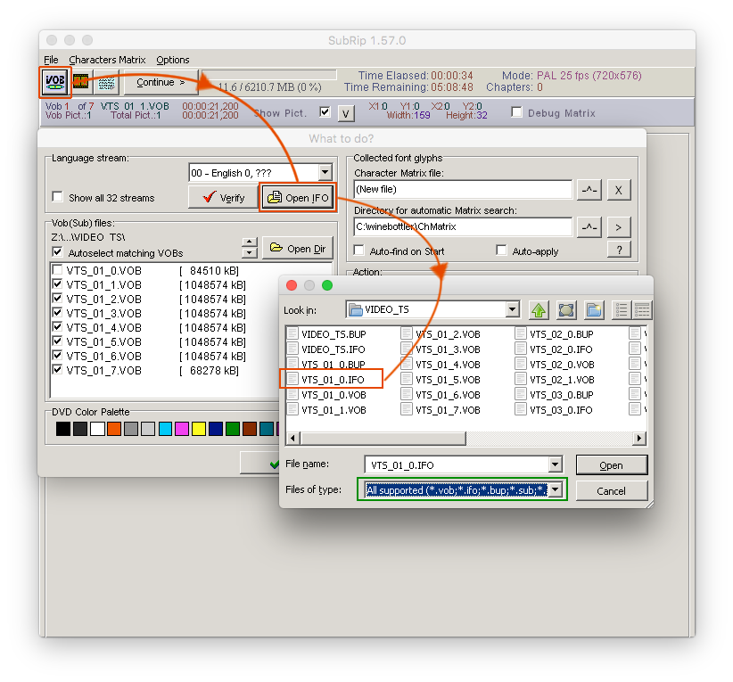When you get to the file list, it will vary from DVD to DVD which file you need to choose. First, make sure they're ordered by name, then select 'All supported files'. What we're looking for is the largest group of .VOB files. Here, you can see there are 7 grouped in a row. When you've found that largest group, select the nearest .ifo file above them.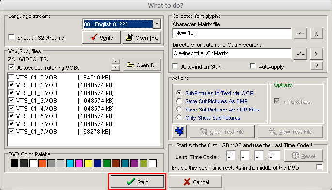When the screen above has loaded, select a language stream (start with English), make sure that the time code (bottom-right) is at 0 (otherwise hit the 'Reset' button next to it). If the 'Clear Text File' button is not greyed out, click that too (this makes sure you have a clean SRT file to work with, 1 for each language). Then, hit 'Start'.Now, what you're doing here is teaching the program to recognise each individual letter. It will highlight what it wants to know (the letter 'p' is the above image), and your job is to enter the 'p' into the text box. Pay attention to whether it's upper or lower case. If the letter is in italics, then make sure to tick the italics box too. Sometimes you'll get more than one letter at a time, if this happens, enter them all into the text box. As you enter more letters, the program will get better at recognising the letters itself.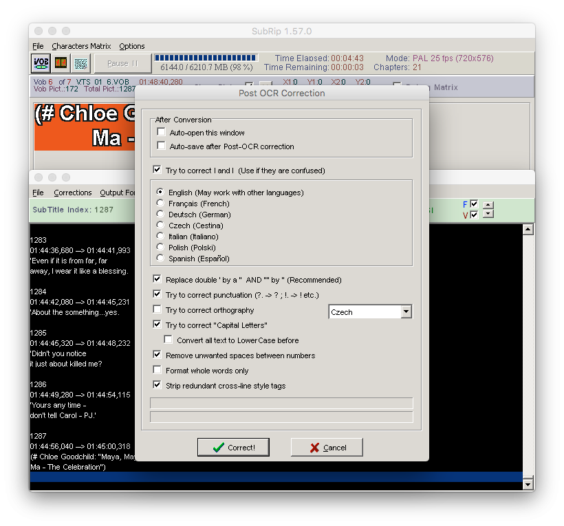When the entire film has finished OCR-ing, select 'Corrections', then 'Post-OCR Corrections'. Tick all the options above (if you're running a non-English track that's listed – French, German, Czech, Italian, Polish, Spanish – select it, if not, try it on English). Hit 'Correct'. When it's done, select 'File' on your output window, then 'Save As' to save your OCRed SRT file. Make sure to note which language it is in the title.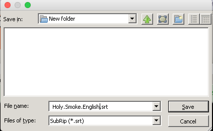Repeat the process by hitting the VOB icon and choosing the next language stream, making sure to reset the time-code and clear the text file. The program will remember all the letters from your English track, so you'll only have to enter in the letters not present in the English alphabet. Fortunately SubRip has character sets for each language allowing you to easily find and select them, as illustrated above. Finally, once you've saved your .srt file, open it in your favourite text editor and run a spell check. BBEdit for Mac has a decent amount of functionality in its free version (formerly known as Text Wrangler). - Putting it all together: Show
We're switching to MKVToolNix now, so load it up. Then drag and drop your completed encode, as well as all of the SRT subtitle files you made with SubRip.
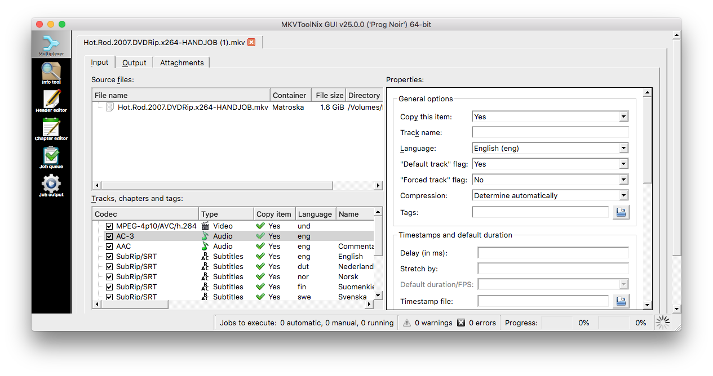As above, find your main audio track and set the language. The original language audio doesn't require a track name, so erase that box if there's anything there and then make sure it is marked as 'Default - yes'. If you have a Dual Audio encode, then set the original language as 'Default - Yes' and then the English Dub as 'Default - no'. The dub should have the track name 'English Dub'.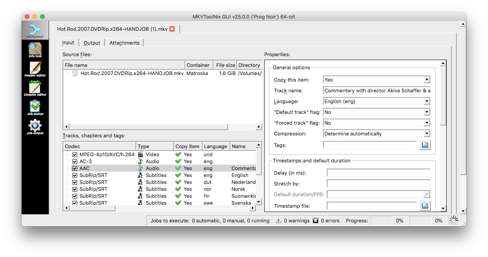If you have a 'Secondary Audio' track, such as the commentary above, you'll need to title it with the participants along with their job descriptions ('Commentary with director Akiva Schaffer & actors Andy Samberg and Jorma Taccone' in our example above). Make sure this is 'Default - no'.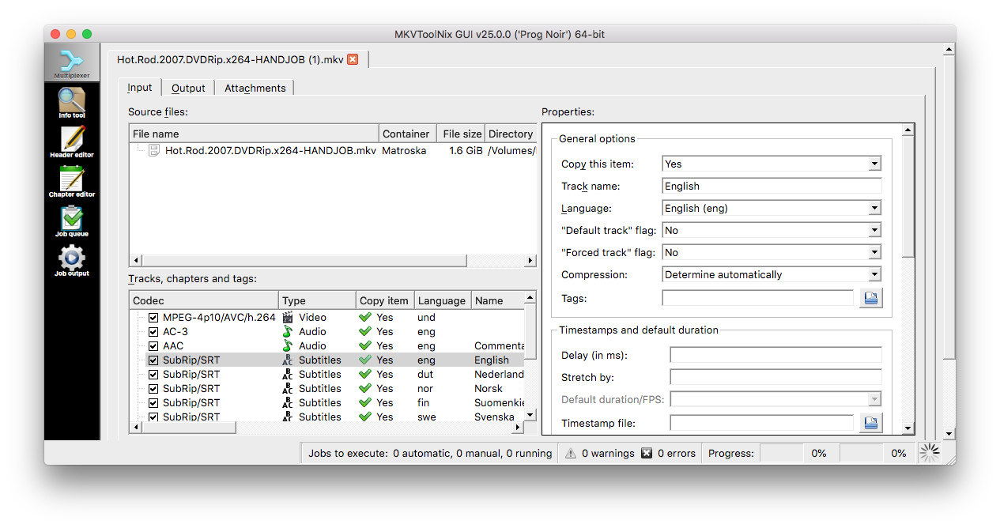Moving on to our English subtitles. If the film is a non-English language film, then set this to 'Default - yes', otherwise, 'no'. If applicable, you may also want to use the track names 'English [Hard of Hearing]', 'English [SDH]' or 'English [Closed Captions]'. If the film is multi-lingual (primarily English, but there are some scenes in other languages), then the DVD should feature a separate subtitles file for these scenes (which we would give the track name 'English [non-English parts]'). In this case, ensure that this English subs track is set 'Default - yes'.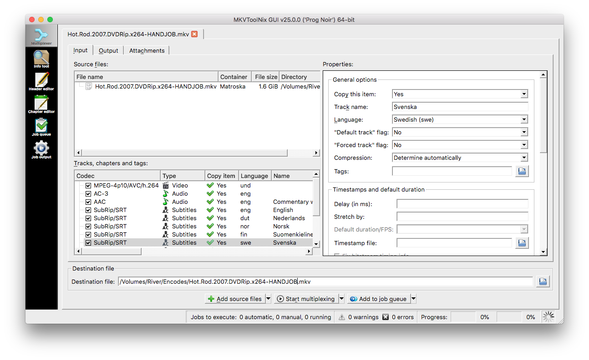If you have any other subtitle tracks, whether they are SRT files you OCR-ed, or VOBSUB ones which you included via Handbrake's Subtitle tab, make sure they are all labelled correctly (track names are optional here) and set to 'Default - no'. Once you've finished all that, hit 'Start Multiplexing'. - Giving it a name: ShowPart 1: FilenameOriginal.Title.2018.DVDRip.x264-HANDJOB.mkvYour filename should look like this, changing only the title and the year for a DVD rip. If your title contains prepositions (e.g. of, in, to), (in)definite articles (i.e. the, a, an), or conjunctions (e.g. and, for, but, so) which are not the first word of the title or subtitle (and contain fewer than 5 letters), then they are written in lowercase. If not, capitalise the first letter. You should also strip out any punctuation in the filename. If it's not 0-9, a-z, A-Z, a full-stop/period (.) or a hyphen (-)... don't use it.If your encode uses AC3 for the main audio, then there is no need to include this information in the filename. If you've used DTS, FLAC or AAC for the main audio, then it will be necessary to note this in the filename just before the 'x264' part.Some examples:• Back.to.the.Future.1985.DVDRip.x264-HANDJOB.mkvFilm with subtitle• Star.Wars.Episode.VI.Return.of.the.Jedi.1983.DVDRip.x264-HANDJOB.mkvFilm with edition information• Donnie.Darko.2001.Directors.Cut.DVDRip.x264-HANDJOB.mkvNon-English language film (with optional AKA)• Trois.Couleurs.Bleu.AKA.Three.Colours.Blue.1993.DVDRip.x264-HANDJOB.mkvNon-English language film (without optional AKA)• Trois.Couleurs.Bleu.1993.DVDRip.x264-HANDJOB.mkvMiniseries• The.Woman.in.White.1982.DVDRip.x264-HANDJOB (containing folder)• The.Woman.in.White.E03.1982.DVDRip.x264-HANDJOB.mkv (episode)• FLCL.E03.Marquis.de.Carabas.2000.DVDRip.x264-HANDJOB.mkv (episode with optional episode title)Concert with FLAC audio• Alizee.en.concert.2004.DVDRip.FLAC.x264-HANDJOB.mkvPart 2: MetatitleYour metadata title is the one which is generally displayed to the viewer when they play your encode, therefore it is important that it's as informative and professional-looking as possible. It is also not subject to the limitations placed upon filename titling (using only alphanumeric characters). For example: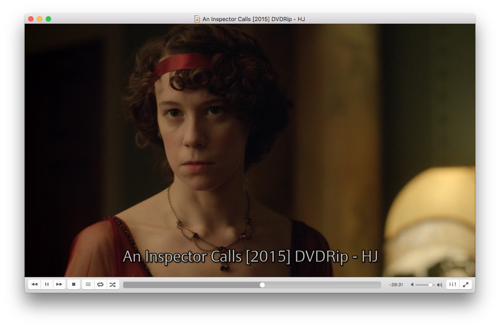The format is:Original Title [YEAR] DVDRip - HJYou do not need to include the audio or video codec in the metatitle and you should also use the abbreviated form of the group name (HJ). It's generally safe to copypaste the title and year as shown atop the PTP torrent group page for the film you're encoding (see below).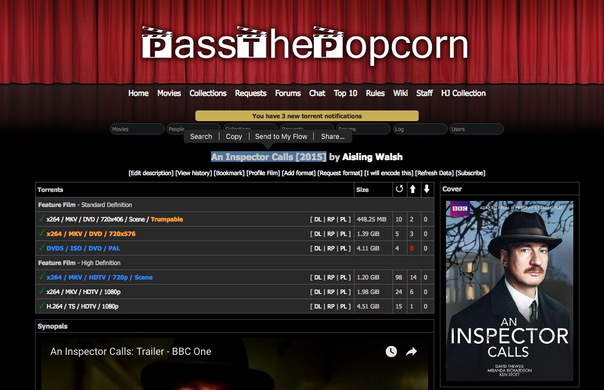Some examples:• Back to the Future [1985] DVDRip - HJFilm with subtitle• Star Wars: Episode VI - Return of the Jedi [1983] DVDRip - HJFilm with edition information• Donnie Darko [2001] Director's Cut DVDRip - HJNon-English language film (with optional AKA)• Trois Couleurs Bleu AKA Three Colours Blue [1993] DVDRip - HJNon-English language film (without optional AKA)• Trois Couleurs Bleu [1993] DVDRip - HJMiniseries• The Woman in White: E03 [1982] DVDRip - HJ (episode)• FLCL: E03 - Marquis de Carabas [2000] DVDRip - HJ (episode with optional episode title)To set the metatitle, you'll need to use MKVToolNix. Open the program, select the 'Edit Headers' tab and then drag and drop your finished encode onto the main window as shown below.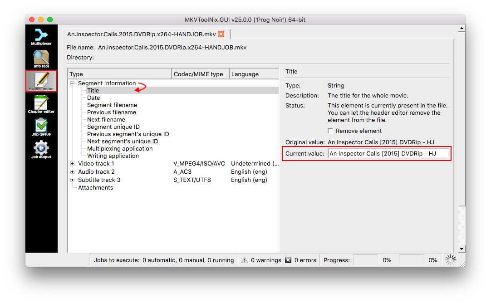Select 'Segment Information', then 'Title' and enter your metatitle in the box shown above. Once that's done, you can save.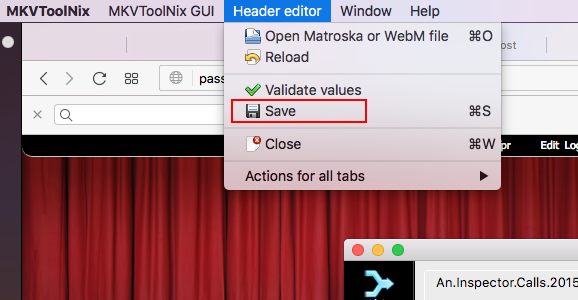
- Gathering intel: Show
When your encode is finished muxing, load it up in VLC. Before we start taking our screenshots, we need to make sure that VLC is setup correctly for it. Hit 'VLC' on the top bar and select 'Preferences'. Navigate to the tab shown below and double-check that the format of your images is 'PNG'.
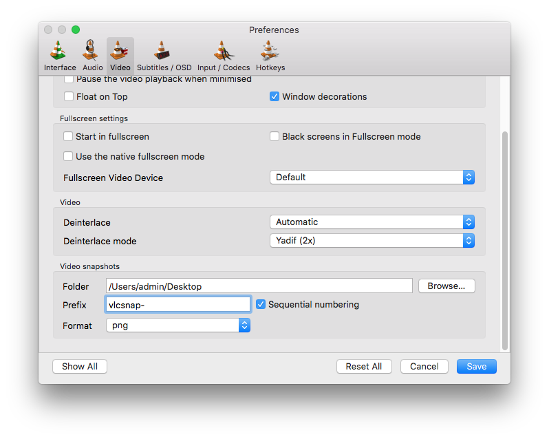Take a second to remember the location that the snapshots are going to be saved to. Now close the preferences windows and navigate to the main video window.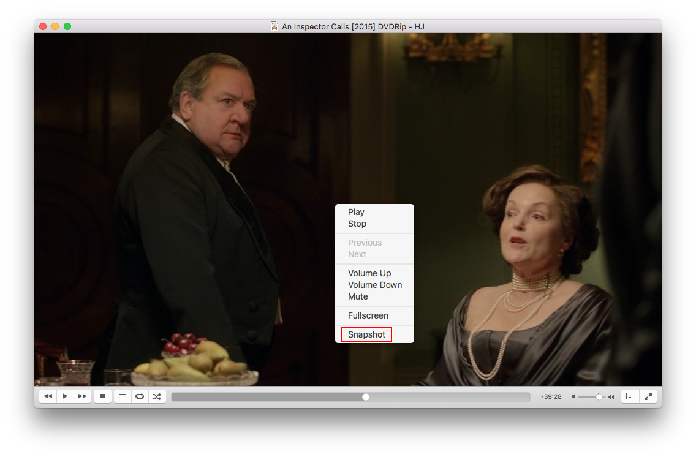You need at least 3 screenshots. So skip through the film and find a good mix. Ideally more would be better since you need a mix of interior, exterior, light and dark scenes. Try to pick ones without a lot of motion in shot. Pause, right-click, select 'Snapshot' and repeat.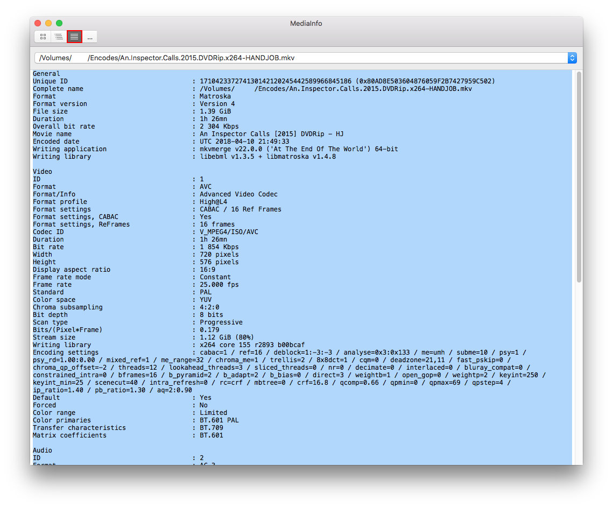Finally, load your complete encode into MediaInfo. Select 'View > Text" then select and copy the entire output to your clipboard.When you've got all of that information, create a forum post in the HANDJOB forum thread and wait for approval from anyone ranked Soldato+. You must not upload it to PTP until it has been approved. All new encoders and those ranked 'Associate' need to seek approval for each encode before uploading. Here's what an approval request post might look like: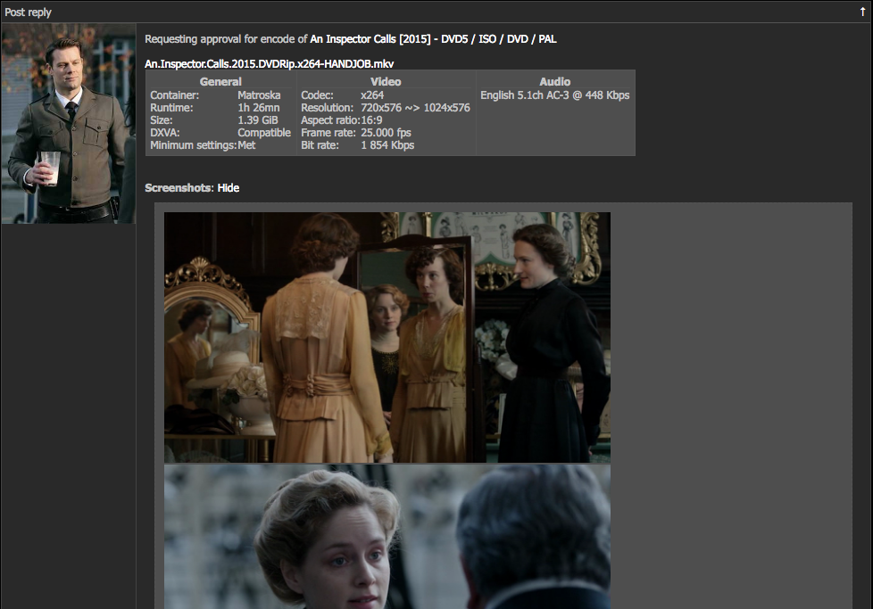The BBCode for that would be:Requesting approval for encode of ## PL to Source ##[mediainfo]## Paste Mediainfo log here ##[/mediainfo][hide=Screenshots][img]https://ptpimg.me/screenshot1.png[/img][img]https://ptpimg.me/screenshot2.png[/img][img]https://ptpimg.me/screenshot3.png[/img][/hide]Note: When posting this information on the PTP torrent upload form, do not put your screenshots in a hide tag. Simply paste their URLs directly onto the form.
The post-credits stinger
- What are forced subtitles?: ShowThe image above comes from 2012's The Avengers. While the film is an English language production, the above scene includes a conversation in Russian between Natasha and her captors. Sometimes (but not always), the director will want you to understand what is being said (assuming you cannot speak Russian). To enable this, subtitles will carry a 'forced flag', instructing your DVD or BluRay player to display the translation automatically on the screen.Somewhat confusingly, in encoding there is also an option for subtitles to be forced (forced = yes), default (default = yes), or optional (default = no). In this context, the use of 'forced = yes' means that the selected subtitle track is displayed mandatorily, giving the viewer no option to disable it. As such, 'forced = yes' should never be used when encoding.
- How do I encode Closed Captions as text subtitles?: Show
If your disc only has Closed Captions (CC), then it is definitely worth extracting them. Firstly, you will need to include them in your Handbrake encode as illustrated below:
Next, you're going to need a couple of extra pieces of software:_files/w6aw56.png) Now load up MKV Tools, and drop your .mkv encode (with the Closed Captions) onto the window. Select the stream with the Closed Captions (this will likely be an '.ssa' or '.ass' file) and extract it as shown below.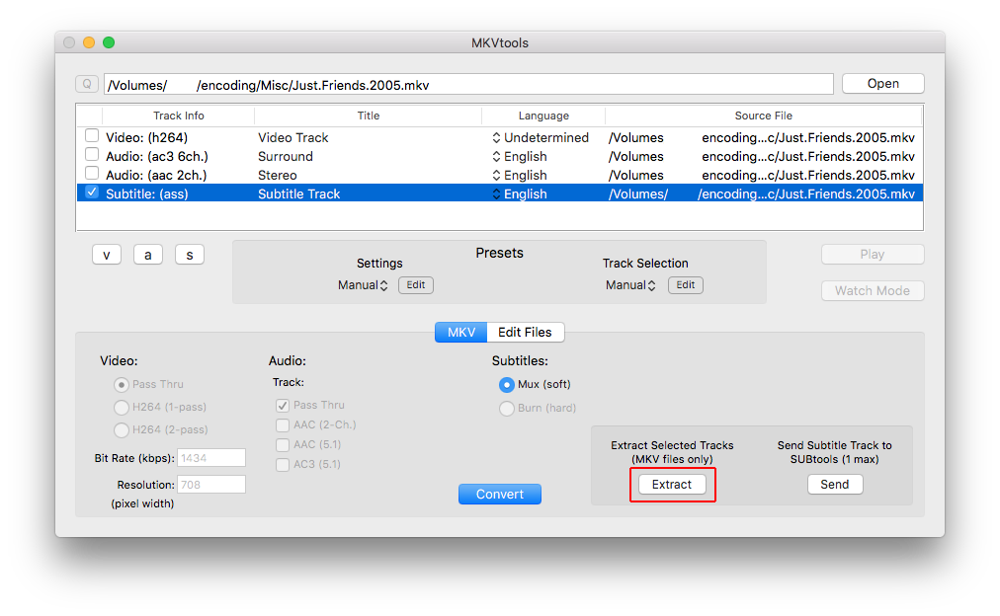Now load up Aegisub, hit the 'File -> Open Subtitles' menu options and select the subtitle file you just exported with MKV Tools. Once it's loaded up, goto 'File' and select 'Export As'. Then use the following settings: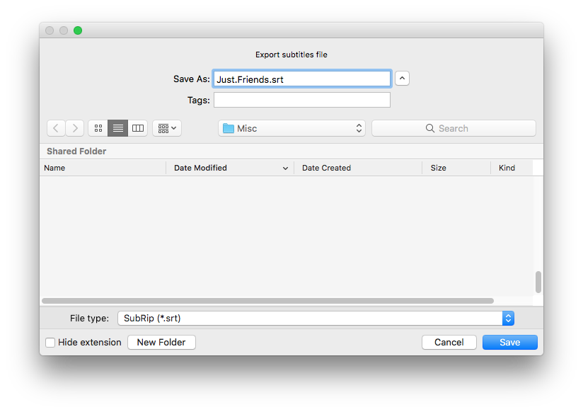Finally, with your newly produced .srt file, follow the guidelines from 'Act 3: Putting it all together' to include them in your encode. Since the .ssa stream will also still be in your .mkv file, you will need to untick this from the MKVToolNix output.Note: Closed Captions will often be written entirely in uppercase. It's beyond the scope of this guide to convert these to normal text, but someone in the HANDJOB thread might be able to provide advice on this.
Now load up MKV Tools, and drop your .mkv encode (with the Closed Captions) onto the window. Select the stream with the Closed Captions (this will likely be an '.ssa' or '.ass' file) and extract it as shown below.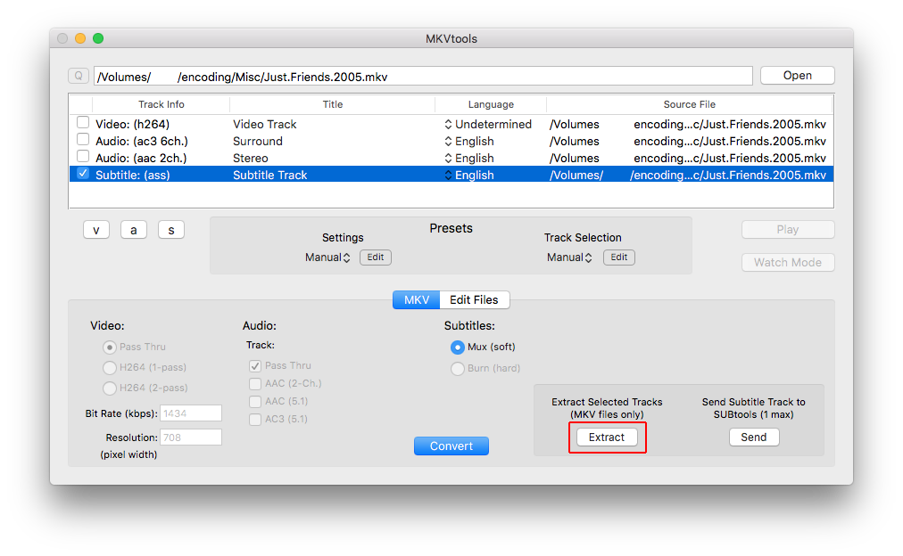Now load up Aegisub, hit the 'File -> Open Subtitles' menu options and select the subtitle file you just exported with MKV Tools. Once it's loaded up, goto 'File' and select 'Export As'. Then use the following settings: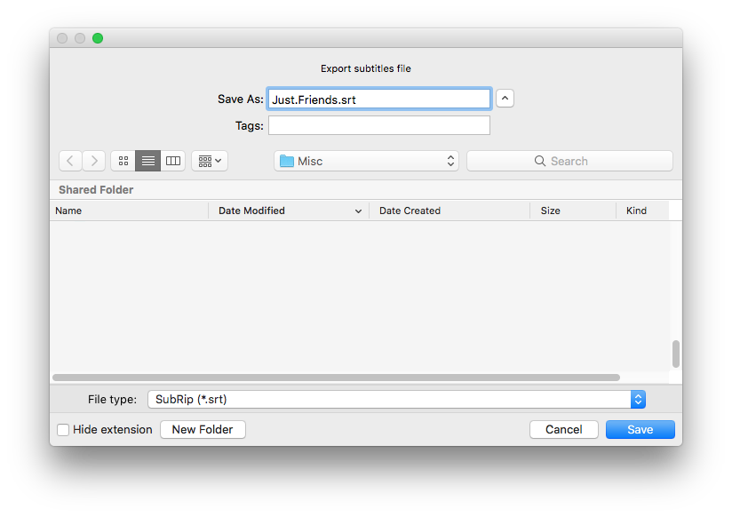Finally, with your newly produced .srt file, follow the guidelines from 'Act 3: Putting it all together' to include them in your encode. Since the .ssa stream will also still be in your .mkv file, you will need to untick this from the MKVToolNix output.Note: Closed Captions will often be written entirely in uppercase. It's beyond the scope of this guide to convert these to normal text, but someone in the HANDJOB thread might be able to provide advice on this. - Have I got my audio and subtitles set up correctly?: Show
_files/fkb8i9.png)
One oft-ignored piece of final advice, watch your encode, or at least a few scenes in full. Keep an eye out for:
- Audio/Video synchronisation problems
- English subtitles not displaying automatically for non-English films
- Subtitles not displaying properly, or at the right time
- Duplicate frames in your encode or otherwise jerky playback. Look out for any pattern of duplicate frames by pressing 'e' in VLC to advance frame-by-frame.
- Any other obvious problems with the video or audio
If you have any problems listed above, please ask for further assistance.
Now you have everything you need. The final step is to post your complete Mediainfo file, along with your screenshots in the HANDJOB thread and wait for approval to upload from someone with sufficient authority (user positions are detailed on the first page of the forum). If you need an image-host, use PTPImg. Be sure you follow any directions or advice given to you carefully by the Handjob team and feel free to ask anything (on topic). All being well, you've just given your first Handjob!